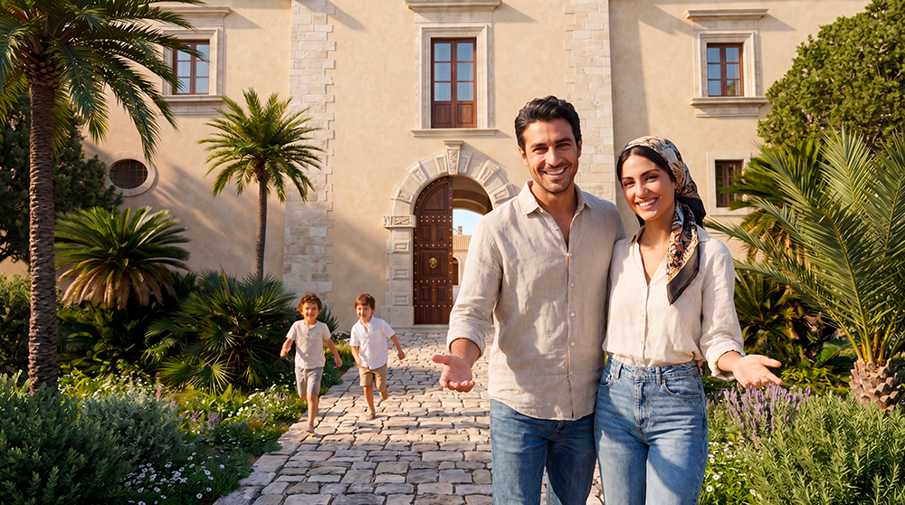
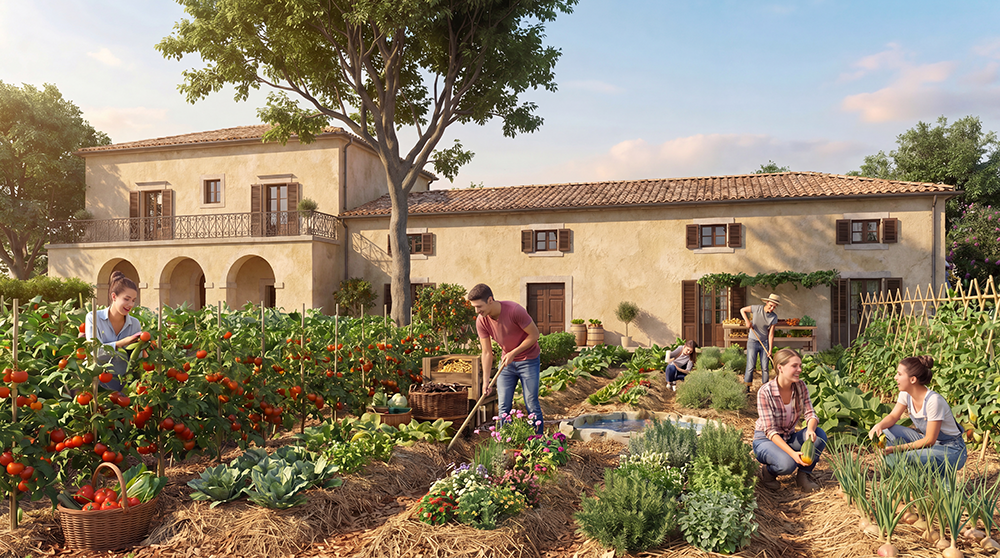
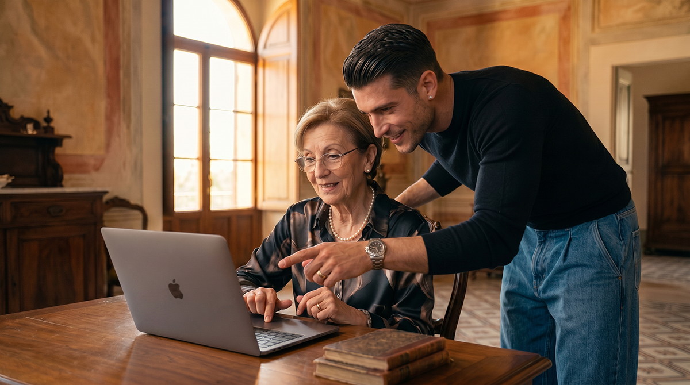
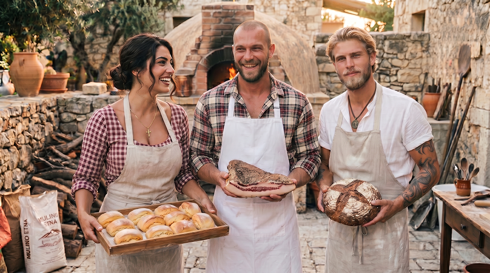
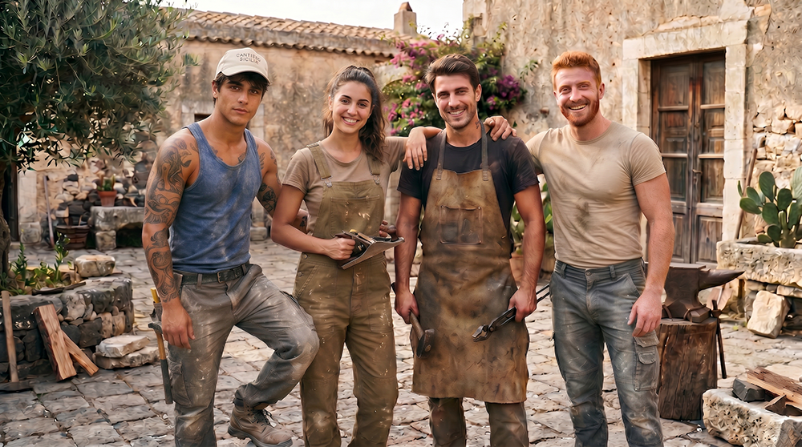
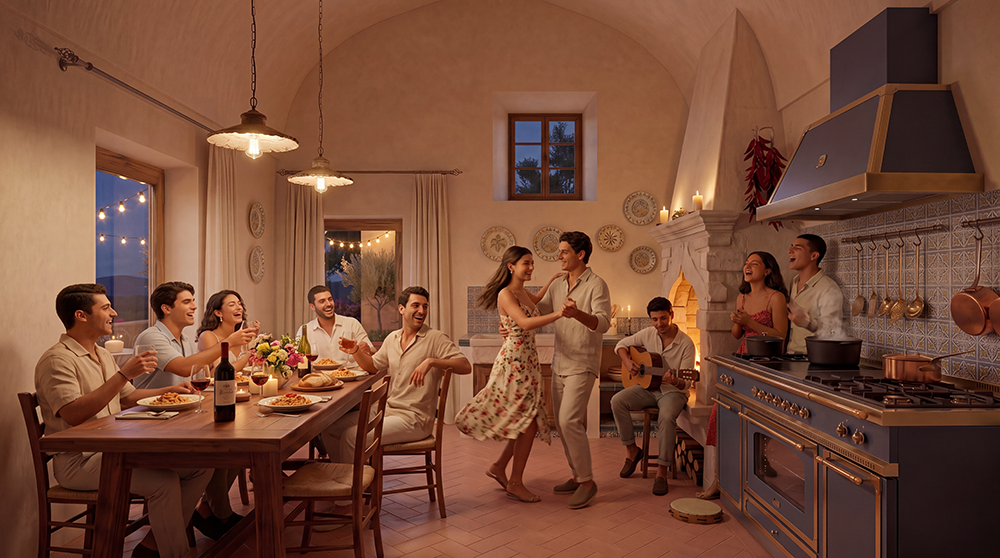

Sicilian Slow Living
Nel cuore della Sicilia iblea, il Sicilian Slow Living non è una moda, ma il ritorno alle origini. È il rispetto per i ritmi lenti della natura, la valorizzazione delle tradizioni contadine, la cura delle relazioni umane e il legame profondo con la terra fertile di ulivi, agrumi e pietra calcarea.
Modus vivendi

Radici nella Tradizione
La ricostruzione di masserie antiche come Baglio San Michele non è un esercizio di nostalgia, ma un atto concreto di rigenerazione. Utilizziamo tecniche costruttive tradizionali siciliane: muri in pietra a secco, volte a botte, tufo locale e materiali naturali del territorio.
Le pratiche agricole che adottiamo sono quelle storiche del Ragusano: rotazione delle colture, concimazione naturale, potature rispettose degli ulivi secolari e gestione sostenibile delle risorse idriche attraverso sistemi tradizionali di raccolta e distribuzione. In questo modo preserviamo il patrimonio genetico e architettonico della Sicilia, restituendo vita a luoghi che rischiavano di scomparire.

Permacultura Mediterranea
Non si tratta di semplice agricoltura biologica, ma di un sistema progettato per imitare i processi naturali della macchia mediterranea e rigenerare il suolo.
- Orti sinergici e consociazioni: colture associate che si proteggono a vicenda.
- Frutteti con varietà antiche siciliane: ulivi secolari (Biancolilla, Nocellara del Belice, Tonda Iblea), mandorli di Avola, carrubi, fichi d’India e fichi fioroni, agrumi storici come l’arancia rossa di Ribera, il limone Interdonato di Messina, il cedro di Santa Maria di Licodia e il melograno di Giarre.
- Apicoltura naturale: alveari per la biodiversità e miele ibleo di alta qualità.
- Gestione dell’acqua: cisterne, swales e raccolta piovana.
- Allevamento estensivo rispettoso: pecore, capre e galline in pascolo rotazionale.
Obiettivo: creare un ecosistema produttivo, resiliente e bello, preservando il patrimonio genetico siciliano dei frutti antichi.

Comunità Intergenerazionale
Una grande famiglia estesa, non un villaggio di estranei. Gli anziani autosufficienti del Borgo non sono mai “lasciati indietro”. Al contrario: diventano i pilastri della comunità. Accudiscono i bambini dei vicini con amore e pazienza, trasmettendo storie, valori e competenze pratiche. In cambio, ricevono compagnia, aiuto concreto quando serve e, soprattutto, uno scopo rinnovato.
Se una famiglia ha bisogno di sostegno — un bambino malato, un trasloco, un periodo difficile — le altre famiglie del Borgo rispondono. Non per obbligo, ma perché questa è la mentalità: ci si prende cura gli uni degli altri come si farebbe in una grande famiglia contadina di un tempo.
Autosufficienza Autentica
Produzione locale di cibo, energia e artigianato, senza dipendenza dalle catene globali. Ogni famiglia contribuisce secondo le proprie competenze e possibilità, creando un’economia circolare interna al Borgo.
L’autosufficienza non significa isolamento. Significa invece ridurre la vulnerabilità, aumentare la resilienza e mantenere il valore economico all’interno della comunità. Dall’orto alla tavola, dalla legna al calore, dal miele al sapone, ogni prodotto racconta una storia di cura e rispetto per il territorio.
Creatività e smart working
Scrittori, illustratori, sviluppatori, architetti, designer, coach: molti di loro stanno già organizzandosi. Portano competenze preziose — dal graphic design per il nostro futuro agriturismo, alla creazione di un’app per coordinare i turni dell’orto.
Ma imparano anche a staccare. Scoprono che il loro lavoro diventa più creativo quando la mattina falciano il prato o osservano le api per mezz’ora. O quando la giornata inizia nel silenzio della Messa in cappella. Capiscono che una deadline può aspettare il tramonto. E che se la connessione Wi-Fi è ottima… lo è ancora di più la connessione con se stessi.

Gli anziani autosufficienti del Borgo non sono mai “lasciati indietro”. Al contrario: diventano i pilastri della comunità. Accudiscono i bambini dei vicini con amore e pazienza, trasmettendo storie, valori e competenze pratiche. In cambio, ricevono compagnia, aiuto concreto quando serve e, soprattutto, uno scopo rinnovato.
Se una famiglia ha bisogno di sostegno — un bambino malato, un trasloco, un periodo difficile — le altre famiglie del Borgo rispondono. Non per obbligo, ma perché questa è la mentalità: ci si prende cura gli uni degli altri come si farebbe in una grande famiglia contadina di un tempo.
Wi-Fi performante in tutta la zona comune
Coworking all’aperto con vista sui campi
“Ore lente” serali senza notifiche (opzionale ma incoraggiato)
APPRENDERE FACENDO
Formazione professionale e Permacultura
Orticoltura & Permacultura
Progetta e gestisci un orto sinergico. Impara a leggere il paesaggio, a creare suoli fertili e a coltivare in armonia con la natura. Dalle aiuole rialzate ai policoltivi.
Prossima edizione: Marzo 2027

Apicoltura & Custodia delle Api
Diventa apicoltore consapevole. Gestione dell’arnia, sciami, malattie, produzione di miele, propoli e polline. Etica e sostenibilità al centro.
Prossima edizione: Aprile 2027

Allevamento da Cortile & Pollame
Galline, anatre, oche, conigli. Allestimento del pollaio, alimentazione naturale, riproduzione, macellazione etica. Tutto quello che serve per l’autosufficienza familiare.
Prossima edizione: Maggio 2027
Ogni corso include pratica sul campo, materiale didattico, attestato e accesso alla community permanente del Borgo.
Lo Slow Living al Baglio San Michele

Ritmi biologici naturali
Giornate scandite dall’alba al tramonto. Lavoro nei campi, pause all’ombra degli ulivi secolari, cene con prodotti appena raccolti.
Condivisione e trasmissione
Gli anziani trasmettono il proprio sapere, la propria saggezza. Le giovani famiglie imparano e contribuiscono con nuova energia.
Creatività e telelavoro
Spazi per nomadi digitali immersi nella bellezza siciliana: vista mare, silenzio, ispirazione per artisti e creativi.